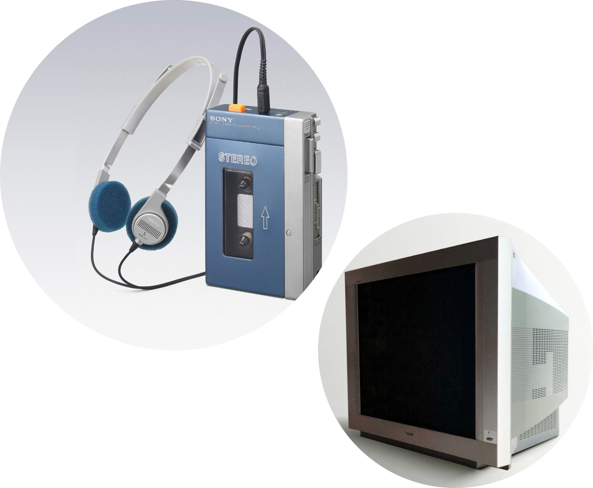
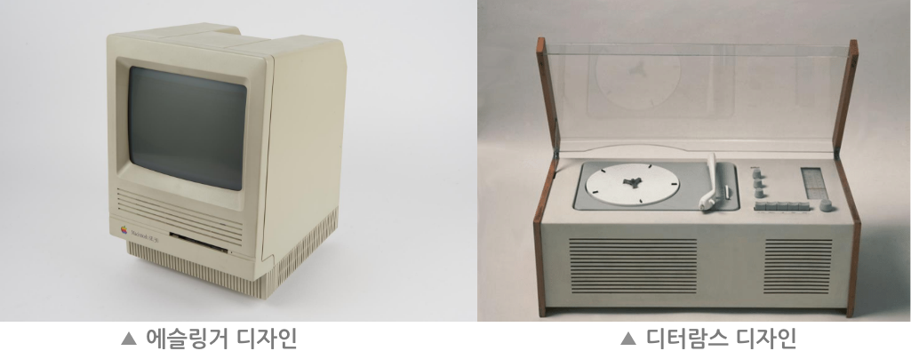
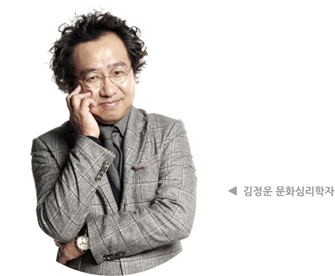
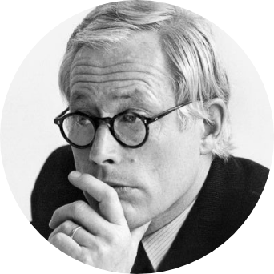
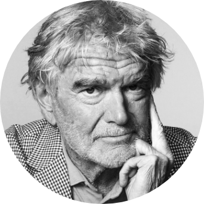

대학 입학 후 우연히 손에 넣게 된 소니 워크맨의 그 깜찍함은 내게
충격이었다.
레너드 코언이 노래하는 거친 저음의 ‘소 롱 매리앤느(So Long, Marianne)’
를
들었다. 전율이었다. 그때나 지금이나 나는 이미 했던 이야기
‘하고, 또 하는’ 사
내들의 술자리를 극도로 혐오한다. 차라리 헤드폰을 끼고
음악을 듣는 편이 훨
씬 행복하다.
소니 워크맨의 충격 이후 생긴 습관이다.한동안 나는 소니의 전자제품을 사고 싶어 환장했다. 전자제품이 어떻게 이렇게 아름다울 수 있을까 싶었다. 유학 시절에는
소니의 트리니트론(Trinitron) TV가 그렇게 갖고 싶었다. 그러나 가격이 삼성·LG TV의 두 배였다. 3평 남짓한 기숙사에 사는
유학생이 소유 하기엔 너무 크고 사치스러운 물
건이었다.
그렇게 아름다웠던 소니의 물건들이 어느 순간부터 황당하게 변했다. 오늘날의 소니는 그때 나를 그렇게 흥분시켰던 그 소니
가 더 이상은 아니다. 회생 불가능해 보인다.
그때, 마음을 빼앗았던
소니의 디자인
당시 소니는 어떻게 그토록 폼이 났을까. 소니의 전성기는 1975년 독일의 전자회사 베가(Wega)를 인수
한 후부터다. 23년 설립된 베가는 역시 독일의 전자회사인 브라운(Braun)과 앞서거니 뒤서거니 경쟁하
며 둘 다 전자기기에 ‘디자인’이라는 새로운 개념을 연결시킨, 독일을 대표하는 기업이었다. 당시 브라운
에는 한스 구겔로트(Hans Gugelot·1920~65)와 디터 람스(Dieter Rams·1932~)라는 전설적인 디자
이너가 있었다. 브라운에 뒤처져 있던 베가는 외부의 디자인 회사에 제품 디자인을 맡겼다.
승부수는 먹혔다. 베가의 제품들은 단숨에 브라운을 따라잡았다. 이때 베가의 디자인을
도맡았던 이가 젊고 야심찬 하르트무트 에슬링거(Hartmut Esslinger·1944~)였다. 베
가를 인수한 후 베가의 디자인 명성까지도 갖고 싶어 했던 소니는 ‘소니-베가(Sony-
Wega)’라는 브랜드를 새로 만들었다. 베가의 디자인을 도맡았던 에슬링거와의 공동작
업도 한동안 계속됐다(‘소니-베가’는 2005년 ‘브라비아(Bravia)’라는 새로운 브랜드가
생길 때까지 지속됐다). 유학시절 그렇게 갖고 싶었던 소니의 트리니트론 TV는 바로 소
니-베가의 에슬링거가 디자인한 제품이었다.
소니의 전자제품에 대한 내 관심이 식어갈 무렵 새 전자제품이 나타나 다시 내 영혼을
빼앗았다. 애플이다. 나는 애플의 새 제품을 사고 싶어 안달했다. 애플 컴퓨터는 윈도 기
반의 컴퓨터에 비해 두 배 가까이 비쌌다. 그래도 나는 애플이 갖고 싶었다. 너무 예뻤기
때문이다. 당시 나를 환장하게 했던 애플 컴퓨터의 디자인은 ‘백설공주(Snow White)’
디자인이라 불렸다. 이것이 소니 트리니트론을 디자인했던 하르트무트 에슬링거, 바로
그의 작품이었다는 것을 한참 후에 알았다. 그는 82년부터 애플에 합류했다.
스티브 잡스도 한때 ‘소니 마니아’였다. 잡스가 집의 차고를 나와 처음으로 얻은 사무실
은 소니 매장과 같은 건물이었다. 잡스는 수시로 소니 매장을 기웃거렸다. 그때 자신에
게 새로운 제품이 나올 때마다 브로슈어를 건네준 판매원을 잡스는 훗날 애플로 스카우
트했다. 바로 그 ‘소니 스타일’을 개발한 에슬링거가 이제 애플의 스티브 잡스와 손잡은
것이다. 그러나 새로 영입한 에슬링거에게 잡스가 요구한 것은 정작 ‘소니 스타일’이 아
니었다. ‘바우하우스 스타일’이었다.
헤르베르트 바이에르 Herbert Bayer
바우하우스의 출판·광고국장을 지낸 헤르베르트
바이어는 그래픽 디자이너 겸 사진가 겸 건축가
다. 기하학적 산세 리프 활자체를 고안했고, 미국
으로 건너간 뒤인 45년 콜로라도 애스펀 리조트
를 설계했다.
하르트무트 에슬링거 Hartmut Esslinger
대학 졸업 후 ‘프로그(Frog) 디자인’을 설립한 하
르트무트 에슬링거는 독일 전 자회사 베가의 TV
디자인으로 이름을 알린다. 75년 베가가 소니에
인수된 뒤 에는 소니의 명성을 드높인 트리니트
론 TV를 디자인했다. 82년 애플에 합류한 그는
‘백설공주’ 스타일을 선보인다. 흰색 케이스, 간결
하고 둥근모서리, 길고 얇은 홈의 선들이 나란히
이어지는 것이 특징으로 디터 람스의 작품들에서
“훔쳐왔다”.
디터 람스 Dieter Rams
불세출의 산업 디자이너 디터 람스는 독일
전자회사 브라운에서 61년부터 수석 디자
이너로 일하며 미니멀한 디 자인의 정수를
선보였다. ‘백설공주의 관’으로 불리는 복
합음향기기 SK4도 그의 작품이다.
스티브 잡스 Steve Jobs
소니 스타일을 추구했던 잡스는 83년 애스펀 리
조트에서 헤르베르트 바이에르의 디자인을 경험
한 뒤 바우하우스 스타일로의 대전환을 천명한다.
잡스 손잡은 에슬링거
‘디터 람스’를 훔치다
베를린자유대학교에서 문화심리학으로 디플롬, 박사학위를 취득한 후 베를린
자유대 전임강사, 명지대 교수를 역임했다. 2012년, 교수를 사임하고 일본 교
토 사가예술대에서 일본화를 전공했다. 2016년 귀국 후, 여수에 살며 그림 그
리고, 글 쓰고, 작은 배를 타고나가 눈먼 고기도 잡는다. 저서로『에디톨로지』
『가끔은 격하게 외로워야 한다』『남자의 물건』등이 있다.
출처:중앙일보


훔쳐온 제품 디자인의 명칭도 하필 ‘백설공주’였다. 디터 람스가 디자인한 제품 중 가장 히트 친 SK 시리즈의
별명이 바로 ‘백설공주의 관(棺)’이었기 때문이다. 턴테이블과 진공관 라디오를 일체형으로 개발한 브라운의
SK 시리즈는 독일 특유의 둔탁한 느낌은 찾아볼 수 없는 전혀 다른 모습의 전자기기였다. 전체적으로 하얗
고, 아크릴로 된 뚜껑으로 내부가 들여다보이기에 이런 별명을 얻었다. 거기에 스피커를 장식한 가늘고 긴 세
로의 선들은 기계를 더욱 깔끔하고 날렵하게 보이게 해주었다. 에슬링거의 애플 컴퓨터는 디터 람스의 이 같은
디자인적 특징을 그대로 훔쳐온 것이다.
디터 람스는 바우하우스의 전통을 다시 세우기 위해 전쟁 후 서독에 설립된 ‘울름조형학교(Hochschule für
Gestaltung Ulm)’와 아주 깊은 관련이 있다. 에슬링거의 뒤를 이어 오늘날까지 애플의 디자인을 책임지고
있는 조너선 아이브(Jonathan Ive) 또한 디터 람스의 디자인을 ‘훔쳐왔다’는 사실은 널리 알려져 있다. 20세
기 후반 가장 혁신적이라는 평가를 받는 소니와 애플의 디자인은 이런 식으로 1919년 설립된 바우하우스에
뿌리를 내리고 있는 것이다.

